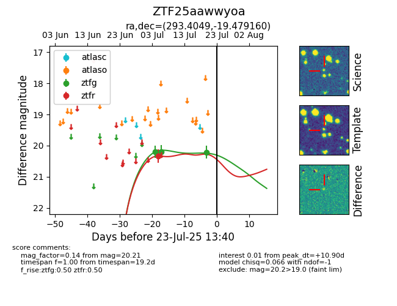

Target ZTF25aawwyoa at 2025-07-23 13:40, see:
FINK: fink-portal.org/ZTF25aawwyoa
Lasair: lasair-ztf.lsst.ac.uk/objects/ZTF25aawwyoa
ALeRCE: alerce.online/object/ZTF25aawwyoa
alt names
ZTF25aawwyoa (ztf,fink)
coordinates:
equatorial (ra, dec) = (293.4049,-19.47916)
galactic (l, b) = (19.6900,-17.79503)
photometry
last ztfg=20.21, ztfr=20.33
3 ztfg, 1 ztfr detections
